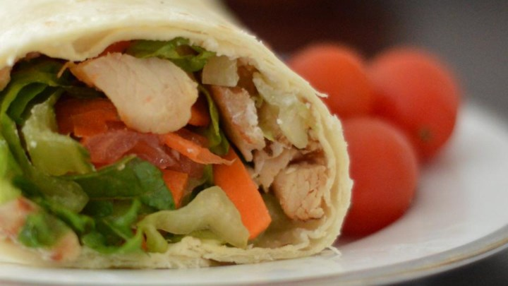
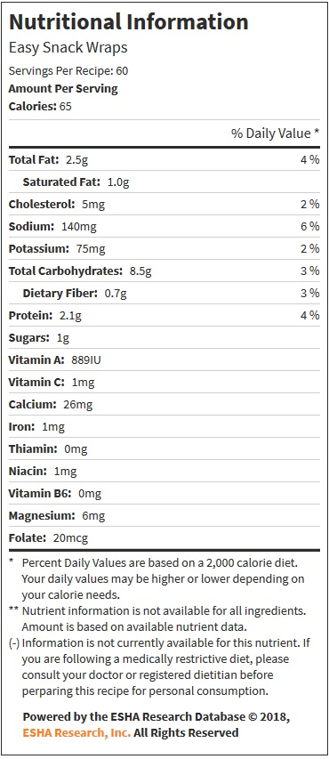

World's Healthiest Foods
15-Minute Easy Snack Wrap
This Easy Snack Wrap is a healthy recipe from Allrecipes.com. Click Here to access the original recipe page.

Prep and Cook Time: 15 Minutes
Ingredients:
- 12 (10 inch) flour tortillas
-
1 (6 ounce) package sliced deli-style turkey
-
2 cups shredded carrots
-
1 (8 ounce) package cream cheese
-
1 head lettuce
-
2 cups minced tomato
Directions:
-
Spread cream cheese evenly over the tortillas.
-
Top the cream cheese with lettuce leaves. Arrange the turkey slices in even layers on top of the lettuce.
-
Sprinkle the carrots and tomato over the turkey slices. Roll the tortillas into wraps. Cut the wraps diagonally into bite-sized pieces.
-
Secure with toothpicks.
Nutritional Facts:
